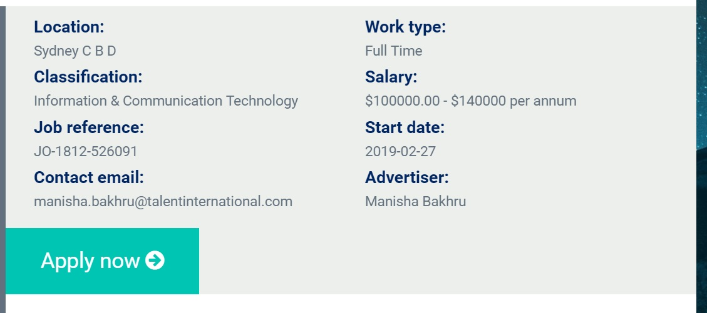
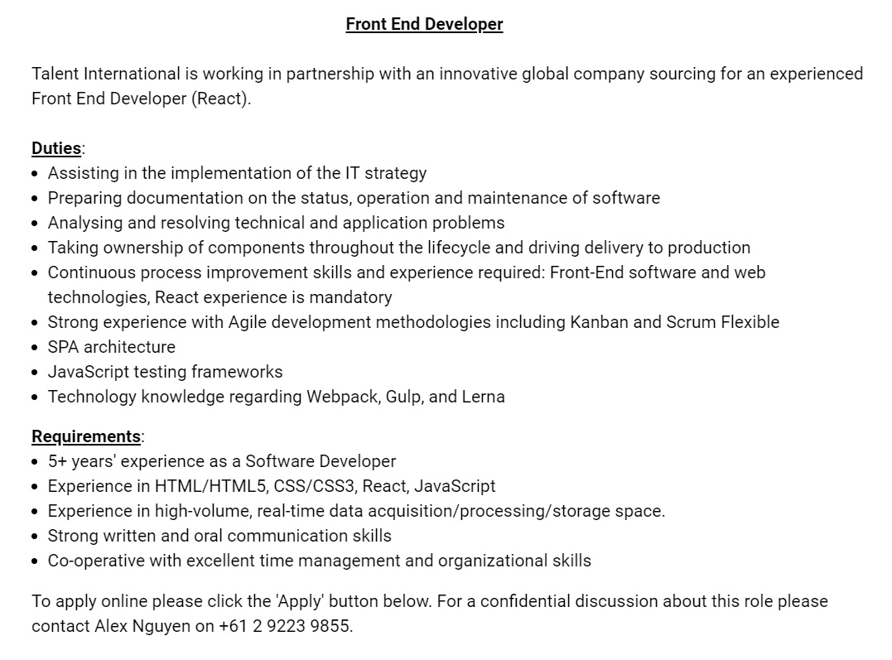

Ideal Job
 The link of the advertisement: https://au.talentinternational.com/jobs/front-end-developer-68
I would like to work in Software area but I also want to try something new like Website Design (like the advertisement above). Furthermore, the salary is attractive and it is a full-time job (not part-time), so I like to apply for this position. As you can see that the advertisement above requires a person who has experience in Software Development so it is appealing to me because I may have experience in Software Programming. Moreover, this is the Front End position which also requires me having knowledges of designing website by HTML/HTML5, CSS/CSS3, React. I need to know about programming techniques from JavaScript besides designing website. Data is not my strength and this position does not demand managing and designing database.
At the moment, I have already known HTML and CSS but I still need to learn JavaScript. I have knowledges about basic programming techniques so I also need to read more about some advanced programming techniques. To achieve this position, I will be asked to study many things and I would like to make a plan for it. First year is the moment that I need to spend time on studying independently because there are not many exercises from classes, so I have free time for studying online courses. I am going to focus on 2 online courses in first year, they are iOS programming course and advanced course for HTML and CSS. Second year will be more difficult for me because there will be many difficult exercises from classes which I need to spend lots of time on. I am thinking of searching for the internship at this moment, something about programming applications on iOS. I am going to pay 100% attention on classes in final year.